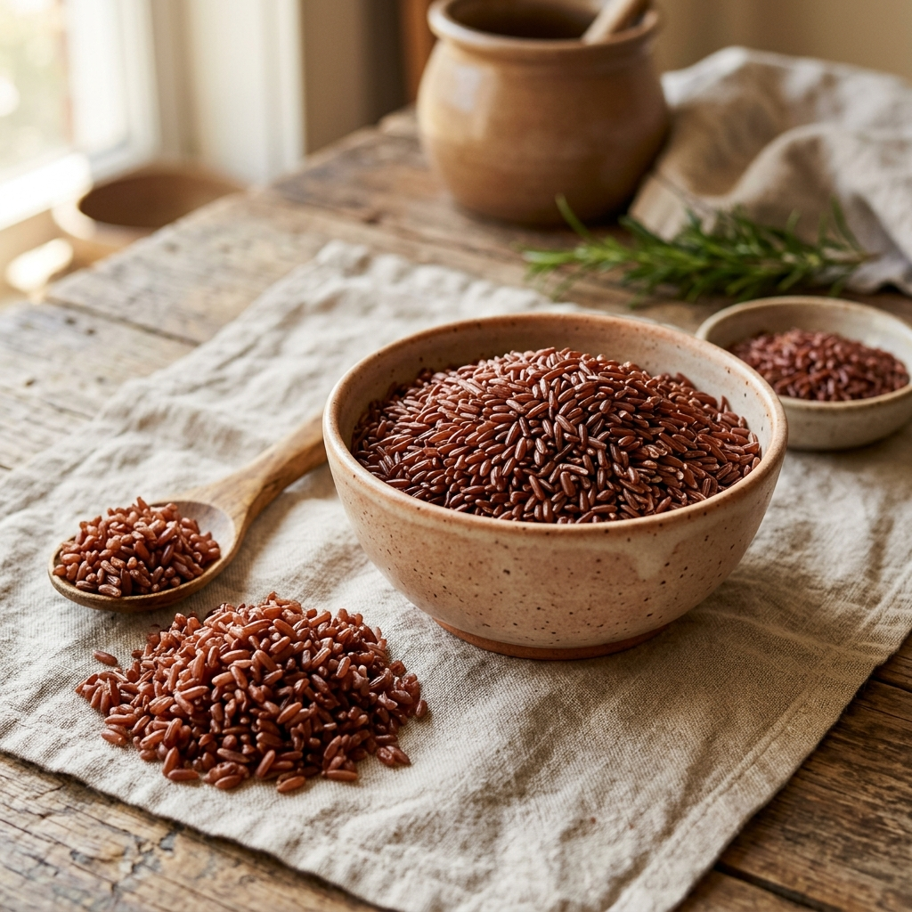
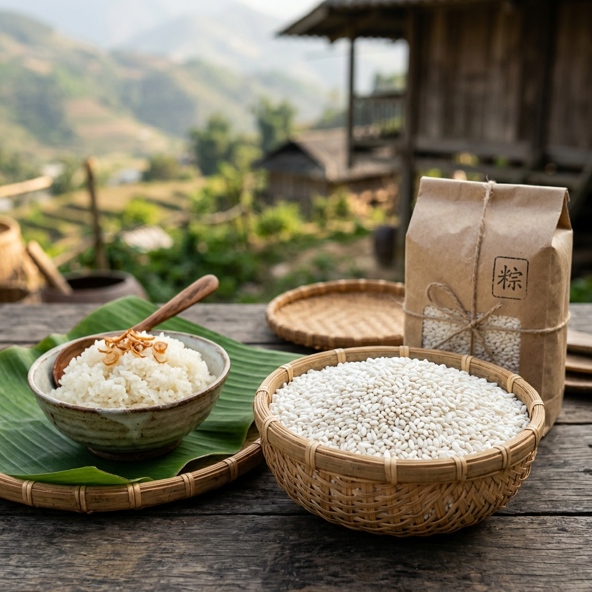
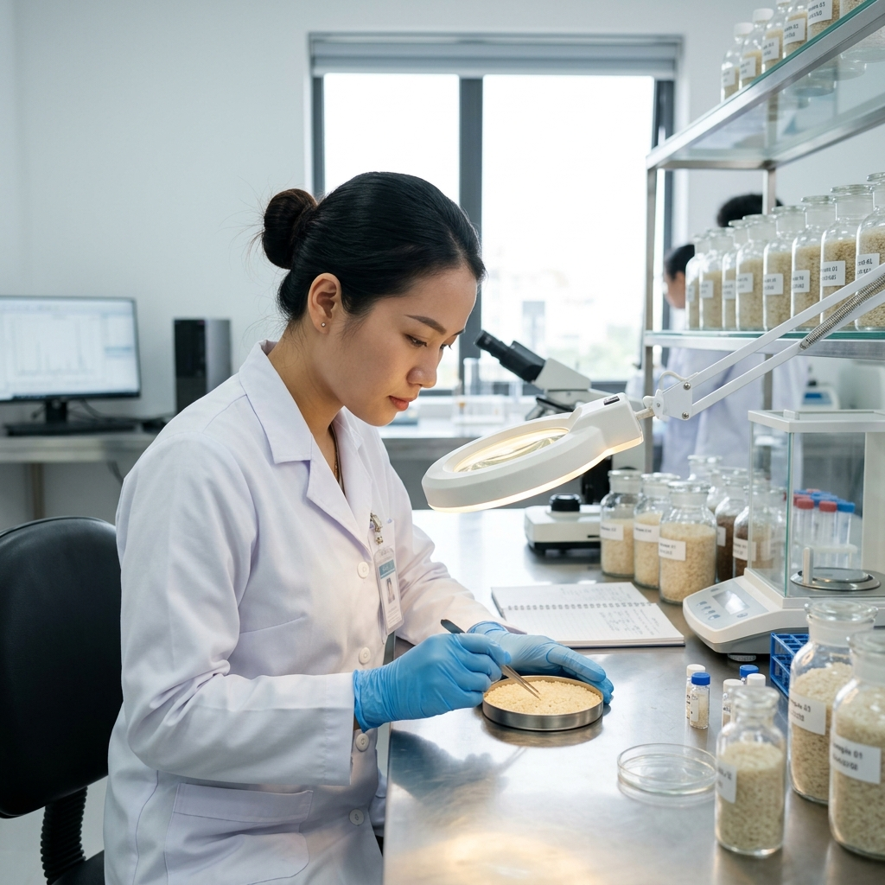

Chủ lực
Gạo ST25 hữu cơ
Loại gạo ngon nhất thế giới, hạt dài, trắng trong, cơm dẻo thơm mùi lá dứa.
Hạt dài
Dẻo thơm
Túi 5KG
Tư vấn đặt hàng
100% tự nhiên - chuẩn ISO 22000:2018
Hạt dài, cơm dẻo thơm, được canh tác tự nhiên và kiểm soát chất lượng từ vùng nguyên liệu đến khi đóng gói.
Sản phẩm
Giữ các dòng sản phẩm hiện có, trình bày rõ hơn để người mua nhận biết nhanh loại gạo, hương vị và nhu cầu sử dụng.
Loại gạo ngon nhất thế giới, hạt dài, trắng trong, cơm dẻo thơm mùi lá dứa.

Giàu dinh dưỡng, tốt cho tim mạch và người ăn kiêng, hạt gạo đỏ thẫm đặc trưng.

Đặc sản vùng cao, hạt to tròn, dẻo nhiều, thơm nồng, phù hợp làm xôi và bánh.
Giới thiệu
Công ty CP Sản xuất và Thương mại Nông Sản Việt tập trung vào nông sản sạch, tôn trọng hệ sinh thái canh tác và giữ trọn hương vị hạt gạo Việt.
Với giống lúa ST25 đặc sản Sóc Trăng, quy trình được kiểm soát từ vùng nguyên liệu, xay xát, đóng gói đến phân phối cho gia đình, nhà hàng, bếp ăn và đối tác sỉ.

Vùng nguyên liệu Chọn lúa đúng độ chín để giữ hương thơm.
Xay xát - đóng gói Quy trình khép kín, sạch và đồng đều.
Kiểm định đầu ra Kiểm soát chất lượng trước khi xuất hàng.
Dinh dưỡng
Thông số tham khảo trên 100g gạo, trình bày thành bảng để khách hàng xem nhanh trước khi đặt mua.

Liên hệ
Liên hệ trực tiếp Nông Sản Việt để được tư vấn sản phẩm, quy cách đóng gói và nhu cầu phân phối.